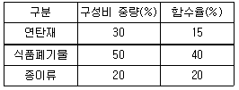
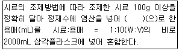
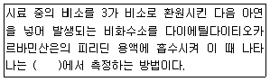
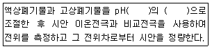
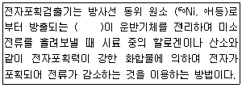
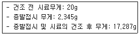
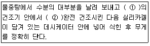

폐기물처리산업기사 (2012-03-04 기출문제)
1과목: 폐기물개론
1. 평균 입경이 20cm인 폐기물을 입경 1cm가 되도록 파쇄할 때 소요되는 에너지는 입경을 4cm로 파쇄할 때 소요되는 에너지의 몇 배인가? (단, Kick의 법칙 적용, n=1)
- 1.57배
- 1.64배
- 1.72배
- 1.86배
(정답률: 34%)

2. 어느 도시에서 쓰레기 수거 시 수건인부가 1일 3500명, 수거인부 1인이 1일 8시간, 연간 300일을 근무하며 쓰레기 수거 운반하는데 소요된 MHT가 10.7이라면 연간 쓰레기 수거량은?
- 593000 t/년
- 658000 t/년
- 785000 t/년
- 854000 t/년
(정답률: 73%)
3. 적환장에 대한 설명으로 옳지 않은 것은?
- 최종처리장과 수거지역의 거리가 먼 경우 사용하는 것이 바람직하다.
- 저밀도 거주지역이 존재할 때 설치한다.
- 재사용 가능한 물질의 선별시설 설치가 가능하다.
- 대용량의 수집차량을 사용할 때 설치한다.
(정답률: 77%)
4. 트롬멜 스크린에 대한 설명으로 옳지 않은 것은?
- [원통의 임계속도×0.45=최적속도]로 나타낸다.
- 원통의 경사도가 크면 부하율이 커진다.
- 스크린 중에서 선별효율이 좋고 유지관리상의 문제가 적다.
- 원통의 경사도가 크면 효율이 떨어진다.
(정답률: 50%)
5. 분뇨의 특성과 가장 거리가 먼 것은?
- 악취가 유발난다.
- 질소농도가 높다.
- 토사 및 협잡물이 많다.
- 고액분리가 잘된다.
(정답률: 82%)
6. 쓰레기를 100톤 소각하였을 때 남은 재의 중량이 소각 전 쓰레기 중량의 20%이고 재의 용적이 16m3이라면 재의 밀도는?
- 1150kg/m3
- 1250kg/m3
- 1350kg/m3
- 1450kg/m3
(정답률: 80%)
7. 도시의 생활쓰레기를 분류하여 다음 표와 같은 결과를 얻었다. 이 쓰레기의 함수율은?

- 약 24%
- 약 29%
- 약 34%
- 약 39%
(정답률: 74%)
8. 수분이 96%이고 무게가 100kg인 폐수 슬러지를 탈수 시 수분이 70%인 폐수 슬러지로 만들었다. 탈수된 후의 폐수 슬러지의 무게는? (단, 슬러지 비중은 1.0)
- 11.3kg
- 13.3kg
- 16.3kg
- 18.3kg
(정답률: 79%)
9. 함수율 80%의 슬러지 케이크 3000kg을 소각 시 소각재 발생량(kg)은? (단, 케이크 건조 중량당 무기 물 20%이며, 유기물 연소율은 95%이고, 소각에 의한 무기물 손실은 없다.)
- 144kg
- 178kg
- 248kg
- 273kg
(정답률: 72%)
10. 5%의 고형물을 함유하는 슬러지를 하루에 10m3씩 침전지에서 제거하는 처리장에서 운영기술의 발전으로 6%의 고형물을 함유하는 슬러지로 제거할 수 있게 되었다면 같은 고형물량(무게기준)을 제거하기 위하여 침전지에서 제거되는 슬러지량(m3)은? (단, 비중은 1.0 기준)
- 8.99
- 8.77
- 8.55
- 8.33
(정답률: 48%)
11. 쓰레기 관리 체계에서 비용이 가장 많이 드는 것은?
- 수거
- 저장
- 처리
- 처분
(정답률: 84%)
12. 세대 평균 가족 수가 4인인 1000세대 아파트 단지에 쓰레기 수거사항을 조사한 결과가 다음과 같을 때 1인 1일 쓰레기 발생량은? (단, 1주일간의 수거용량: 80m3, 쓰레기 밀도: 350kg/m3)
- 1.6 kg/인ㆍ일
- 1.4 kg/인ㆍ일
- 1.2 kg/인ㆍ일
- 1.0 kg/인ㆍ일
(정답률: 54%)
13. 폐기물의 새로운 수송방법인 Pipe line 수송에 관한 설명으로 옳지 않은 것은?
- 잘못 투입된 물건은 회수하기 어렵다.
- 부피가 큰 쓰레기는 일단 압축, 파쇄 등의 전처리가 필요하다.
- 쓰레기 발생밀도가 높은 인구밀집지역 및 아파트지역 등에서 현실성이 있다.
- 단거리보다는 장거리 수송에 경제성이 있다.
(정답률: 74%)
14. 폐기물 선별방법 중 분쇄한 전기줄로부터 금속을 회수하거나 분쇄된 자동차나 연소재로부터 알루미늄, 구리 등을 회수하는데 사용되는 선별장치로 가장 옳은 것은?
- Fluidized Bed Separators
- Stoners
- Optical Sorting
- Jigs
(정답률: 72%)
15. 직경이 3.2m인 Trommel Screen의 임계속도는?
- 약 21 rpm
- 약 24 rpm
- 약 27 rpm
- 약 29 rpm
(정답률: 57%)
16. 폐기물 성분 중 비가연성인 60wt%를 차지하고 있다. 밀도가 550kg/m3인 폐기물이 30m3 있을 때 가연성 물질의 양(kg)은? (단, 폐기물을 비가연성과 가연성분으로 구분)
- 5400
- 6600
- 7400
- 8200
(정답률: 77%)
17. 우리나라의 생활폐기물 일일 발생량으로 가장 옳은 것은?
- 0.3 kg/인
- 1.0 kg/인
- 2.0 kg/인
- 3.0 kg/인
(정답률: 67%)
18. 고로슬래그의 입도분석 결과 입도누적 곡선상의 10%, 60% 입경이 각각 0.5mm, 1.0mm 이라면 유효입경은?
- 0.1mm
- 0.5mm
- 1.0mm
- 2.0mm
(정답률: 64%)
19. 채취한 쓰레기 시료에 대한 성상분석을 위한 절차 중 가장 먼저 실시하는 것은?
- 건조
- 분류
- 전처리
- 밀도 측정
(정답률: 83%)
20. 어떤 폐기물의 압축 전 부피는 3.5m3이고 압축 후의 부피가 0.8m3일 경우 압축비는?
- 2.5
- 2.7
- 3.5
- 4.4
(정답률: 69%)
2과목: 폐기물처리기술
21. 유입수의 BOD가 250ppm이고 정화조의 BOD 제거율이 80%라면 정화조를 거친 방류수의 BOD는?
- 50 ppm
- 60 ppm
- 70 ppm
- 80 ppm
(정답률: 63%)
22. 유효공극률 0.2, 점토층 위의 침출수 수두 1.5m인 점토 차수층 1.0m를 통과하는데 10년이 걸렸다면 점토차수층의 투수계수는 몇 cm/sec인가?
- 2.54×10-7
- 3.54×10-7
- 2.54×10-8
- 3.54×10-8
(정답률: 57%)
23. 혐기성 소화의 장단점으로 옳지 않은 것은?
- 반응이 더디고 소화기간이 비교적 오래 걸린다.
- 호기성 처리에 비해 슬러지가 많이 발생한다.
- 소화 가스는 냄새가 나며 부식성이 높은 편이다.
- 동력시설의 소모가 적어 운전비용이 저렴하다.
(정답률: 53%)
24. 메탄올(CH3OH) 5kg이 연소하는데 필요한 이론공기량은?
- 15 Sm3
- 18 Sm3
- 21 Sm3
- 25 Sm3
(정답률: 36%)
25. 고화 처리법 중 피막형성법에 관한 설명으로 옳지 않은 것은?
- 낮은 혼합률을 가진다.
- 에너지 소요가 크다.
- 화재위험성이 있다.
- 침출성이 크다.
(정답률: 44%)
26. 1차 반응속도에서 반감기(초기농도가 50% 줄어드는 시간)가 10분이다. 초기농도의 75%가 줄어드는데 걸리는 시간은?
- 20분
- 30분
- 40분
- 50분
(정답률: 65%)
27. 매시간 10ton의 폐유를 소각하는 소각로에서 황산화물을 탈황하여 부산물인 80% 황산으로 전량 회수한다면 그 부산물량(kg/hr)은? (단, S:32, 폐유 중 황성분 2%, 탈황률 90%라 가정함)
- 약 590
- 약 690
- 약 790
- 약 890
(정답률: 39%)
28. 유기적 고형화에 대한 일반적 설명과 가장 거리가 먼 것은?
- 수밀성이 작고 적용 가능 폐기물이 적음
- 처리비용이 고가
- 방사선 폐기물처리에 적용함
- 미생물 및 자외선에 대한 안정성이 약함
(정답률: 40%)
29. 점토를 매립지의 차수막으로 이용하기 위한 소성지수기준을 가장 알맞게 나타낸 것은? (단, 포괄적인 관점 기준)
- 5% 이상 10% 미만
- 10% 이상 30% 미만
- 30% 이상 50% 미만
- 50% 이상 70% 미만
(정답률: 58%)
30. 쓰레기를 소각하였을 때 남는 재의 무게는 쓰레기의 10%이고 재의 밀도는 1.⑤g/cm3 이라면 쓰레기 50톤을 소각할 경우 남는 재의 부피는?
- 4.23m3
- 4.76m3
- 5.26m3
- 5.83m3
(정답률: 59%)
31. 함수율 99%의 슬러지 1000m3을 농축시켜 300m3의 농축슬러지가 얻어졌다고 하면, 농축슬러지의 함수율은? (단, 탱크로부터 월류되는 SS는 무시하며, 모든 슬러지의 비중은 1.0)
- 93.6%
- 94.3%
- 95.2%
- 96.7%
(정답률: 54%)
32. 퇴비를 효과적으로 생산하기 위하여 퇴비화 공정 중에 주입하는 Bulking Agent에 대한 설명과 가장 거리가 먼 것은?
- 처리대상물질의 수분함량을 조절한다.
- 미생물의 지속적인 공급으로 퇴비의 완숙을 유도한다.
- 퇴비의 질(C/N비) 개선에 영향을 준다.
- 처리대상물질 내의 공기가 원활히 유통될 수 있도록 한다.
(정답률: 50%)
33. 고형물 중 유기물이 90%이고, 함수율이 96%인 슬러지 500m3를 소화시킨 결과 유기물 중 2/3가 제거되고 함수율 92%인 슬러지로 변했다면 소화슬러지의 부피는? (단, 모든 슬러지의 비중은 1.0 기준)
- 100 m3
- 150 m3
- 200 m3
- 250 m3
(정답률: 22%)
34. 함수율이 40%인 슬러지가 자연 건조되어 총 무게의 20%에 해당하는 수분이 증발하였다면 수분 증발 후 슬러지의 함수율은?
- 20%
- 25%
- 30%
- 35%
(정답률: 43%)
35. 슬러지를 개량(Conditioning)하는 주된 목적은?
- 농축 성질을 향상시킨다.
- 탈수 성질을 향상시킨다.
- 소화 성질을 향상시킨다.
- 구성성분 성질을 개선, 향상시킨다.
(정답률: 80%)
36. 함수율 90%, 겉보기밀도 1.0t/m3인 슬러지 1000m3를 함수율 20%로 처리하여 매립하였다면 매립된 슬러지의 중량은 몇 톤인가?
- 100
- 125
- 130
- 135
(정답률: 62%)
37. 연직차수막에 대한 설명으로 옳지 않은 것은? (단, 표면차수막과 비교 기준)
- 차수막 보강시공이 가능하다.
- 지중에 수평방향의 차수층이 존재할 때 사용한다.
- 지하수 집배수시설이 필요하다.
- 단위면적당 공사비는 비싸지만 총공사비는 싸다.
(정답률: 70%)
38. 합성차수막 중 CR에 관한 설명으로 옳지 않은 것은?
- 가격이 싸다.
- 대부분의 화학물질에 대한 저항성이 높다.
- 마모 및 기계적 충격에 강하다.
- 접합이 용이하지 못하다.
(정답률: 50%)
39. 매립지에서 발생하는 침출수의 특성이 COD/TOC : 2.0~2.8, BOD/COD : 0.1~0.5, 매립연한 : 5년~10년, COD(mg/L) : 500~10000일 때 효율성이 가장 양호한 처리공정은?
- 생물학적 처리
- 이온교환수지
- 활성탄 흡착
- 역삼투
(정답률: 65%)
40. 열교환기 중 과열기에 관한 설명으로 옳지 않은 것은?
- 일반적으로 보일러의 부하가 높아질수록 대류 과열기에 의한 과열 온도가 상승한다.
- 과열기의 재료는 탄소강을 비롯하여 니켈, 몰리브덴, 바나듐 등을 함유한 특수 내열 강관을 사용한다.
- 과열기는 보일러 전열면을 통하여 연소가스의 여열로 보일러 급수를 예열하여 효율을 높이는 장치이다.
- 과열기는 부착 위치에 따라 전열 형태가 다르다.
(정답률: 62%)
3과목: 폐기물 공정시험 기준(방법)
41. 폐기물 소각시설의 소각재 시료 채취방법 중 회분식 연소방식의 소각재 반출 설비에서의 시료채취로 옳은 것은?
- 하루 운행시간에 따라 매 시마다 2회 이상 채취 하는 것을 원칙으로 하고, 시료의 양은 1회에 100g 이상으로 한다.
- 하루 운행시간에 따라 매 시마다 2회 이상 채취 하는 것을 원칙으로 하고, 시료의 양은 1회에 500g 이상으로 한다.
- 하루 동안의 운전횟수에 따라 매 운전 시마다 2회 이상 채취하는 것을 원칙으로 하고, 시료의 양은 1회에 100g 이상으로 한다.
- 하루 동안의 운전횟수에 따라 매 운전 시마다 2회 이상 채취하는 것을 원칙으로 하고, 시료의 양은 1회에 500g 이상으로 한다.
(정답률: 53%)
42. 다음은 용출 시험을 위한 시료 용액 조제에 관한 내용이다. ( )안에 옳은 것은?

- pH 5.8~6.3
- pH 4.5~8.3
- pH 6.5~7.5
- pH 6.3~7.2
(정답률: 65%)
43. 다음은 자외선/가시선 분광법으로 비소를 측정하는 내용이다. ( )안에 옳은 내용은?

- 적자색의 흡광도를 430nm
- 적자색의 흡광도를 530nm
- 청색의 흡광도를 430nm
- 청색의 흡광도를 530nm
(정답률: 85%)
44. 이온전극법에 의한 시안 측정목적이다. ( )안의 내용으로 옳은 것은?

- 4이하, 산성
- 6~8, 중성
- 9~10, 알칼리성
- 12~13, 알칼리성
(정답률: 72%)
45. 수은을 원자흡수분광광도법(환원기화법)으로 측정할 때 정밀도(RSD)는?
- ±10%
- ±15%
- ±20%
- ±25%
(정답률: 72%)
46. 매질효과가 큰 시험 분석방법에서 분석 대상 시료와 동일한 매질의 표준시료를 확보하지 못한 경우에 매질효과를 보정하여 분석할 수 있는 방법은?
- 절대검정곡선법
- 표준물질첨가법
- 상대검정곡선법
- 내부연적법
(정답률: 41%)
47. 기체크로마토그래피 분석법으로 측정하여야 하는 항목은?
- 유기인
- 시안
- 기름성분
- 비소
(정답률: 67%)
48. 다음은 기체크로마토그래피의 전자포획검출기에 관한 설명이다. ( )안에 내용으로 옳은 것은?

- 알파(α) 선
- 베타(β) 선
- 감마(γ) 선
- X 선
(정답률: 58%)
49. 자외선/가시선 분광법으로 크롬을 측정할 때 시료 중에 총 크롬을 6가크롬으로 산화시키는데 사용되는 시약은?
- 아황산나트륨
- 염화제일주석
- 티오환산나트륨
- 과망간산칼륨
(정답률: 65%)
50. 유기물 함량이 비교적 높지 않고 금속의 수산화물, 산화물, 인산염 및 황화물을 함유하는 시료에 적용되는 산분해법은?
- 질산-황산 분해법
- 질산-염산 분해법
- 질산-과염소산 분해법
- 질산-불화수소산 분해법
(정답률: 69%)
51. 편광현미경법으로 석면을 측정할 때 석면의 정량범위는?
- 1~25%
- 1~50%
- 1~80%
- 1~100%
(정답률: 65%)
52. 자외선/가시선 분광법으로 구리를 정량할 때 간섭물질에 대한 내용으로 옳은 것은?
- 비스무트(Bi)가 구리의 양보다 2배 이상 존재할 경우에는 황색을 나타내어 방해한다.
- 비스무트(Bi)가 구리의 양보다 2배 이상 존재할 경우에는 청색을 나타내어 방해한다.
- 비스무트(Bi)가 구리의 양보다 2배 이상 존재할 경우에는 적색을 나타내어 방해한다.
- 비스무트(Bi)가 구리의 양보다 2배 이상 존재할 경우에는 적자색을 나타내어 방해한다.
(정답률: 65%)
53. 원자흡수분광광도법을 이용한 크롬 측정에 관한설명으로 옳지 않은 것은?
- 정량범위는 사용하는 장치 및 측정조건 등에 다르나 357.9nm에서 최종용액 중에서 0.01~5mg/L이다.
- 공기-아세틸렌 불꽃에서는 철, 니켈 등의 공존물질에 의한 방해영향이 크므로 이때는 황산나트륨을 1% 정도 넣어서 측정한다.
- 시료 중에 칼륨, 나트륨, 리튬, 세슘과 같이 이온화가 어려운 원소가 100mg/L 이상의 농도로 존재할 때에는 측정을 간섭한다.
- 염이 많은 시료를 분석하면 버너 헤드 부분에 고체가 생성되어 불꽃이 자주 꺼지고 버너 헤드를 청소해야 하는데 이를 방지하기 위해서는 시료를 묻혀 분석하거나, 메틸아이소부틸케톤 등을 사용하여 추출하여 분석한다.
(정답률: 47%)
54. 다음 중 감염성 미생물에 대한 검사방법과 가장 거리가 먼 것은?
- 아포균 검사법
- 세균배양 검사법
- 멸균테이프 검사법
- 일반세균 검사법
(정답률: 71%)
55. 실험실에서 폐기물의 수분을 측정하기 위해 다음과 같은 결과를 얻었다. 폐기물의 수분함량은?

- 25.3%
- 28.3%
- 34.3%
- 38.6%
(정답률: 47%)
56. 폐기물 시료채취를 위한 채취도구 및 시료 용기에 관한 설명으로 옳지 않는 것은?
- 노말헥산 추출물질 실험을 위한 시료 채취 시에는 무색경질의 유리병을 사용하여야 한다.
- 유기인 실험을 위한 시료 채취 시에는 무색경질의 유리병을 사용하여야 한다.
- 시료 중에 다른 물질의 혼입이나 성분의 손실을 방지하기 위하여 코르크 마개를 사용하며, 다만 고무마개는 셀로판지를 씌워 사용할 수도 있다.
- 시료용기에는 폐기물의 명칭, 대상 폐기물의 양, 채취장소, 채취시간 및 일기, 시료번호, 채취책임자 이름, 시료의 양, 채취방법, 기타 참고자료를 기재한다.
(정답률: 79%)
57. 다음은 수분 및 고형물-중량법의 분석 절차이다. ( )안의 내용으로 옳은 것은?

- 110±5℃, 2시간
- 1⑤±5℃, 4시간
- 1⑤~110℃, 2시간
- 1⑤~110℃, 4시간
(정답률: 67%)
58. 0.1N 수산화나트륨용액 20mL가 있다. 이 용액을 중화시키려면 다음 중 어느 것이 적합한가?
- 0.1M 황산 20mL
- 0.1M 염산 10mL
- 0.1M 황산 10mL
- 0.1M 염산 40mL
(정답률: 74%)
59. 대상 폐기물의 양이 550톤이라면 시료의 최소수는?
- 32
- 34
- 36
- 38
(정답률: 83%)
60. 온도 표시에 관한 내용으로 옳지 않은 것은?
- 찬 곳은 따로 규정이 없는 한 0~15℃의 곳을 뜻한다.
- 냉수는 4℃ 이하를 말한다.
- 온수는 60~70℃를 말한다.
- 상온은 15~25℃를 말한다.
(정답률: 65%)
4과목: 폐기물 관계 법규
61. 주변지역 영향 조사대상 폐기물처리시설 기준으로 옳지 않는 것은?
- 매립면적 1만 제곱미터 이상의 사업장 지정폐기물 매립시설
- 매립면적 10만 제곱미터 이상의 사업장 일반폐기물 매립시설
- 시멘트 소성로(폐기물을 연료로 사용하는 경우로 한정한다.)
- 1일 처리능력이 50톤 이상인 사업장 폐기물 소각 시설(같은 사업장에 여러개의 소각시설이 있는 경우에는 각 소각시설의 1일 처리능력의 합계가 50톤 이상인 경우를 말한다.
(정답률: 57%)
62. 사업장폐기물을 폐기물처리업자에게 위탁하여 처리하려는 사업장폐기물배출자는 환경부장관이 고시하는 폐기물 처리 가격의 최저액보다 낮은 가격으로 폐기물을 위탁하여서는 아니 된다. 이를 위반하여 폐기물 처리 가격의 최저액보다 낮은 가격으로 폐기물 처리를 위탁한 자에 대한 벌칙 또는 과태료 처분기준은?
- 300만원 이하의 과태료
- 1000만원 이하의 과태료
- 1년 이하의 징역 또는 5백만원 이하의 벌금
- 1년 이하의 징역 또는 3백만원 이하의 벌금
(정답률: 65%)
63. 용어의 정의로 옳지 않은 것은?
- 폐기물처리시설: 폐기물의 중간처분시설, 최종처분시설 및 재활용시설로서 대통령령으로 정하는 시설을 말한다.
- 처리: 폐기물의 소각, 중화, 파쇄, 고형화 등의 중간처리와 매립하거나 해역으로 배출하는 등의 최종처리를 말한다.
- 지정폐기물: 사업장폐기물 중 폐유, 폐산 등 주변 환경을 오염시킬 수 있거나 의료폐기물 등 인체에 위해를 줄 수 있는 해로운 물질로서 대통령령으로 정하는 폐기물을 말한다.
- 생활폐기물: 사업장폐기물 외의 폐기물을 말한다.
(정답률: 80%)
64. 한국폐기물협회의 업무와 가장 거리가 먼 것은?
- 폐기물 관련 국제교류 및 협력
- 폐기물 관련 홍보 및 교육, 연수
- 폐기물 관련 시설 관리
- 폐기물산업의 발전을 위한 지도 및 조사, 연구
(정답률: 67%)
65. 의료폐기물의 종류 중 위해의료폐기물의 종류와 가장 거리가 먼 것은?
- 전염성류 폐기물
- 병리계 폐기물
- 손상성 폐기물
- 생물, 화학폐기물
(정답률: 63%)
66. 폐기물 처분시설 중 의료폐기물을 대상으로 하는 시설의 기술관리인의 자격으로 옳지 않는 것은?
- 폐기물처리산업기사
- 임상병리사
- 보건관리사
- 위생사
(정답률: 69%)
67. 폐기물의 통계조사(폐기물 발생 및 처리 현황 조사)에 관한 내용으로 옳은 것은?
- 1년마다 폐기물 배출 및 처리업체의 보고 자료 등 서면조사에 기초하여 작성
- 2년마다 폐기물 배출 및 처리업체의 보고 자료 등 서면조사에 기초하여 작성
- 3년마다 폐기물 배출 및 처리업체의 보고 자료 등 서면조사에 기초하여 작성
- 5년마다 폐기물 배출 및 처리업체의 보고 자료 등 서면조사에 기초하여 작성
(정답률: 34%)
68. 폐기물처리시설 중 환경부령이 정한 멸균분쇄시설의 검사기관이 아닌 것은?
- 한국산업기술시험원
- 한국환경공단
- 보건환경연구원
- 수도권매립지관리공사
(정답률: 60%)
69. 폐기물 처리업자가 폐기물의 발생, 배출, 처리상황 등을 기록한 장부의 보존기간은? (단, 최종 기재일 기준)
- 6개월간
- 1년간
- 2년간
- 3년간
(정답률: 71%)
70. 의료폐기물은 [환경부장관이 지정한 기관이나 단체]가 환경부장관이 정하여 고시한 검사기준에 따라 검사한 전용 용기만을 사용하여 처리하여야 한다. 다음 중 환경부장관이 지정한 기관이나 단체에 해당되지 않는 것은?
- 한국환경공단
- 국립환경과학원
- 한국화학융합시험연구원
- 한국건설생활환경시험연구원
(정답률: 43%)
71. 누구든지 수입폐기물을 수입할 당시의 성질과 상태 그대로 수출하여서는 아니 된다. 이를 위반하여 수입폐기물을 수입 당시의 성질과 상태 그대로 수출한 자에 대한 벌칙 기준은?
- 2년 이하의 징역 또는 5백만원 이하의 벌금에 처함
- 2년 이하의 징역 또는 1천만원 이하의 벌금에 처함
- 3년 이하의 징역 또는 1천5백만원 이하의 벌금에 처함
- 3년 이하의 징역 또는 2천만원 이하의 벌금에 처함
(정답률: 69%)
72. 폐기물처리시설 중 기계적 재활용시설이 아닌 것은?
- 연료화시설
- 탈수ㆍ건조시설
- 응집ㆍ침전시설
- 증발ㆍ농축시설
(정답률: 86%)
73. 음식물류 폐기물 배출자에 관한 기준으로 옳은 것은?
- 식품위생법에 따른 집단급식소(사회복지사업법에 따른 사회복지시설의 집단급식소 제외) 중 1일 평균 총 급식 인원이 50명 이상인 집단급식소를 운영하는 자
- 식품위생법에 따른 집단급식소(사회복지사업법에 따른 사회복지시설의 집단급식소 제외) 중 1일 평균 총 급식 인원이 100명 이상인 집단급식소를 운영하는 자
- 식품위생법에 따른 집단급식소(사회복지사업법에 따른 사회복지시설의 집단급식소 제외) 중 1일 평균 총 급식 인원이 200명 이상인 집단급식소를 운영하는 자
- 식품위생법에 따른 집단급식소(사회복지사업법에 따른 사회복지시설의 집단급식소 제외) 중 1일 평균 총 급식 인원이 300명 이상인 집단급식소를 운영하는 자
(정답률: 62%)
74. 의료폐기물 발생 의료기관 및 시험ㆍ검사기관에 대한 기준으로 옳지 않은 것은?
- 의료법에 따라 설치된 기업체의 부속 의료기관으로서 면적이 100제곱미터 이상인 의무시설
- 군통합병원령에 따른 연대급 이상 군부대에 설치된 의무시설
- 수의사법에 따른 동물병원
- 노인복지법에 따른 노인요양시설
(정답률: 40%)
75. 폐기물 처리업자의 폐기물보관량 및 처리기한에 관한 기준으로 옳은 것은? (단, 폐기물 수집, 운반업자가 임시보관장소에 폐기물을 보관하는 경우)
- 의료 폐기물 외의 폐기물: 중량이 450톤 이하이고 용적이 300세제곱미터 이하, 5일 이내
- 의료 폐기물 외의 폐기물: 중량이 500톤 이하이고 용적이 300세제곱미터 이하, 5일 이내
- 의료 폐기물 외의 폐기물: 중량이 550톤 이하이고 용적이 300세제곱미터 이하, 5일 이내
- 의료 폐기물 외의 폐기물: 중량이 600톤 이하이고 용적이 300세제곱미터 이하, 5일 이내
(정답률: 67%)
76. 폐기물처리업의 변경신고 사항으로 옳지 않는 것은?
- 상호의 변경
- 연락장소나 사무실 소재지의 변경
- 임시차량의 증차 또는 운반차량의 감차
- 대표자의 변경(권리, 의무를 승계하는 경우 포함)
(정답률: 54%)
77. 설치신고대상 폐기물처리시설 기준으로 옳지 않는 것은?
- 일반소각시설로서 1일 처분능력이 100톤(지정폐기물의 경우에는 5톤) 미만인 시설
- 생물학적 처분시설로서 1일 처분능력이 100톤 미만인 시설
- 열분해시설로서 시간당 처분능력이 100킬로그램 미만인 시설
- 열처리조합시설로서 시간당 처분능력이 100킬로그램 미만인 시설
(정답률: 42%)
78. 폐기물처리업의 업종구분과 영업내용으로 옳지 않는 것은?
- 폐기물수집, 운반업: 폐기물을 수집하여 재활용 또는 처분장소로 운반하거나 폐기물을 수출하기 위하여 수집ㆍ운반하는 영업
- 폐기물 중간재활용업: 폐기물 재활용시설을 갖추고 중간가공 폐기물을 만드는 영업
- 폐기물 최종재활용업: 폐기물 재활용시설을 갖추고 최종가공 재활용폐기물을 만드는 영업
- 폐기물 종합재활용업: 폐기물 재활용시설을 갖추고 중간재활용업과 최종재활용업을 함께 하는 영업
(정답률: 50%)
79. 폐기물처리시설의 설치, 운영을 위탁받을 수 있는 자의 기준에 관한 내용 중 소각시설의 경우 보유하여야 하는 기술인력 기준으로 옳지 않는 것은?
- 기계기사 1급 1명
- 폐기물처리기술사 1명
- 시공분야에서 3년 이상 근무한 자 1명
- 폐기물처리기사 또는 대기환경기사 1명
(정답률: 67%)
80. 시도지사 또는 지방환경관서의 장이 규정에 따른 영업정지 기간의 2분의 1의 범위 안에서 그 행정처분을 가볍게 할 수 있는 경우와 가장 거리가 먼 내용은?
- 위반내용을 시도지사 또는 지방환경관서에 신속히 자진 신고한 경우
- 위반의 정도가 경미하고 그로 인한 주변 환경오염이 없거나 미미하여 사람의 건강에 영향을 미치지 아니한 경우
- 위반행위에 대하여 행정처분을 하는 것이 지역주민의 건강과 생활환경에 심각한 피해를 줄 우려가 있는 경우
- 공익을 위하여 특별히 행정처분을 가볍게 할 필요가 있는 경우
(정답률: 40%)
입경 4cm로 파쇄할 때 필요한 에너지는 평균 입경 20cm에서 20^4 = 160,000배 더 파쇄해야 한다.
따라서 입경 1cm로 파쇄하는 데 필요한 에너지는 입경 4cm로 파쇄하는 데 필요한 에너지의 1/160,000배가 된다.
1/160,000 = 0.00000625
1.57배, 1.64배, 1.72배는 모두 0.00000625보다 작은 값이므로 답이 될 수 없다.
따라서 정답은 1.86배이다.